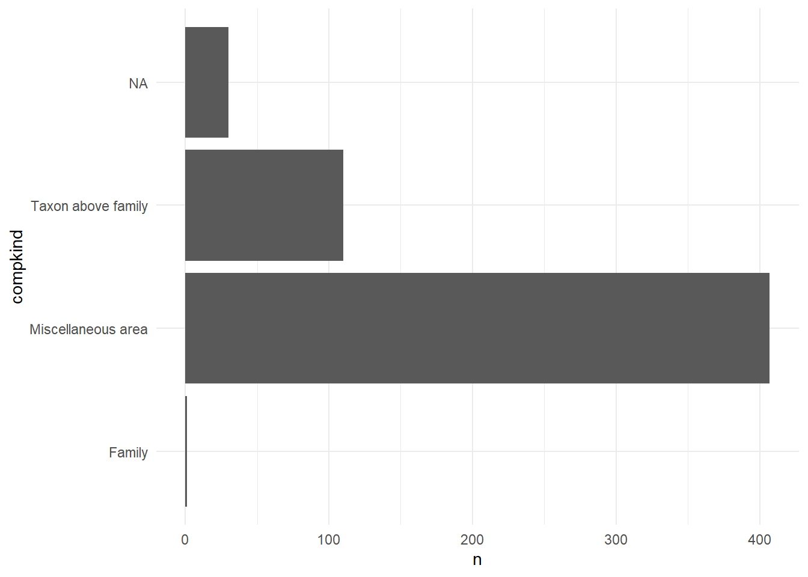
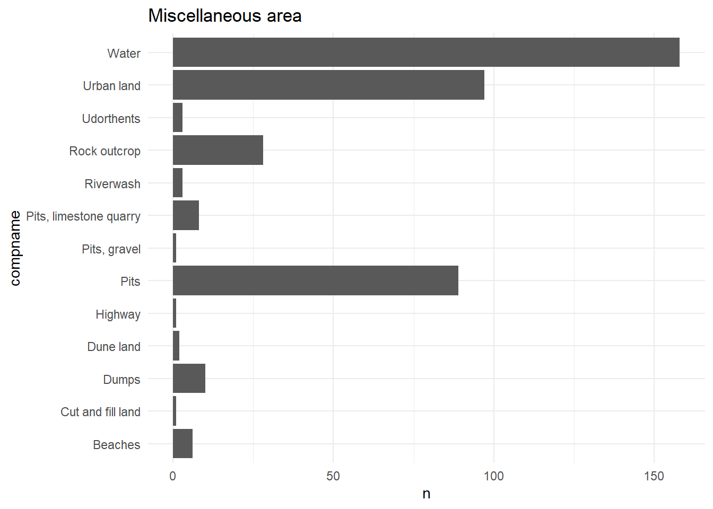
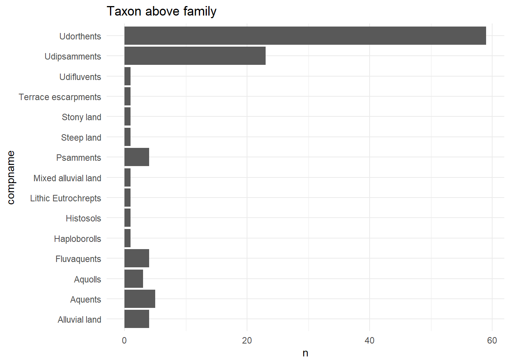
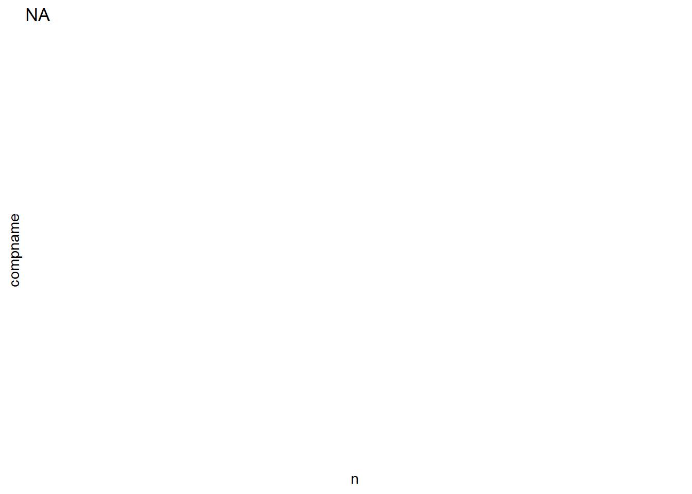
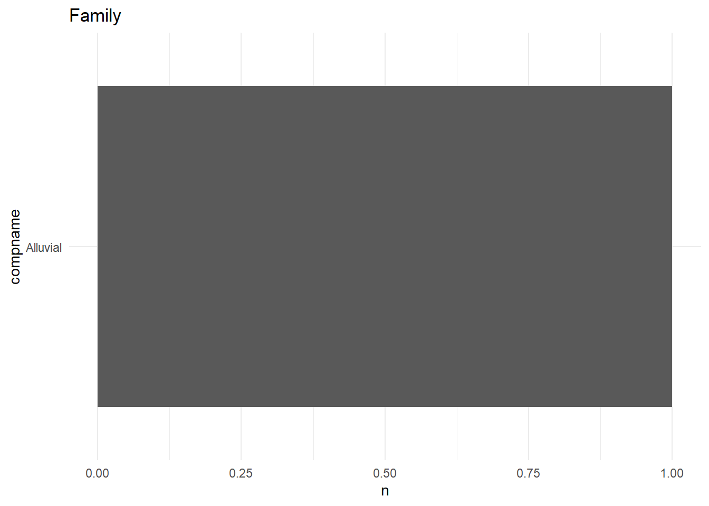

# randomly selected cokeys
ex_cokeys <- c(21760486, 21791957, 21760347, 21782338)
# filter to example horizons
# add some info from comps table for context
toy_hz <- horiz %>%
dplyr::filter(cokey %in% ex_cokeys) %>%
left_join(x = ., y = comp_info, by = "cokey")
# what kinds of soils are we working with?
toy_hz %>%
dplyr::select(cokey, compname, taxsuborder, geomdesc, drainagecl) %>%
unique()4 Horizon Data Averages
4.1 Overview
Goal is to calculate 0-20cm depth weighted averages for all the soil properties of interest, for each component.
I think I want to turn my horizon dataframe into an SPC object (aqp package), see this demo. I think I would use cokey as “site”
4.2 Toy Example
Trying this process with just 4 components I selected at random, to make sure I understand what’s happening with a smaller dataset.
4.2.1 Select some components
4.2.2 Promote to SPC Object
Before we promote to SPC object, need to make sure all my horizons are pre-sorted by profile id cokey, and then by horizon top boundary hzdept_r. Following along with “Object Creation” in the Introduction to SPC Objects docs.
toy_sort <- toy_hz %>%
arrange(cokey, hzdept_r)
# take a look
toy_sort %>%
select(compname, hzname, hzdept_r)# upgrade to SPC
depths(toy_sort) <- cokey ~ hzdept_r + hzdepb_r
# specify horizon name col
hzdesgnname(toy_sort) <- 'hzname'
# confirm it worked
class(toy_sort)[1] "SoilProfileCollection"
attr(,"package")
[1] "aqp"# check out the object
print(toy_sort)SoilProfileCollection with 4 profiles and 14 horizons
profile ID: cokey | horizon ID: hzID
Depth range: 152 - 200 cm
----- Horizons (6 / 14 rows | 10 / 177 columns) -----
cokey hzID hzdept_r hzdepb_r hzname desgndisc desgnmaster desgnmasterprime
21760347 1 0 23 Ap NA A <NA>
21760347 2 23 41 A NA A <NA>
21760347 3 41 51 AB NA AB <NA>
21760347 4 51 91 Bkg NA B <NA>
21760347 5 91 200 Cg NA C <NA>
21760486 6 0 18 Ap NA A <NA>
desgnvert hzdept_l
NA 0
NA 18
NA 36
NA 46
NA 74
NA 0
[... more horizons ...]
----- Sites (4 / 4 rows | 1 / 1 columns) -----
cokey
21760347
21760486
21782338
21791957
Spatial Data:
[EMPTY]4.2.3 Aggregate Along Slabs
We want to work with just the 0-20cm depth, can use slab() to do this. Example in “Aggregating Soil Profile Collections Along Regular Slabs”
Here I’m grouping by cokey (individual profiles) so that we get a depth-wise summary for each cokey, weighted by horizon.
Using slab.fun = mean, I double checked and this computes a depth-weighted mean. This is clear if you examine both the horizon data and the “slab” data below for the component 21760486. The top horizon (0-18cm) has OM 2.5%, and the second horizon (18-28cm) has OM 0.25. The depth weighted average (to 20cm depth) is 2.275
I’m pretty sure I want to include na.rm = TRUE here for slab? Since I’m doing this for each profile, it seems unlikely that I’d have data for just one horizon, but not the next horizon. I suppose I could check this for our components
slab_ex <- slab(object = toy_sort,
fm = cokey ~ om_r + claytotal_r + cec7_r,
slab.structure = c(0,20),
slab.fun = mean,
na.rm = TRUE)
# our example component, 0-20cm depth spans 2 horizons here
toy_hz %>%
select(cokey, hzdept_r, hzdepb_r, om_r, claytotal_r) %>%
arrange(cokey, hzdept_r) %>%
filter(cokey == 21760486)# slab results, note they are "long" format
# om_r = 2.275
slab_ex %>%
filter(cokey == 21760486)# do the weighted mean for om_r by hand
# should match slab results above for cokey 21760486
weighted.mean(x = c(2.5, 0.25), w = c(18,2)) [1] 2.2754.3 Variables
4.3.1 List to include
vars_of_interest <-
c(
'claytotal_r',
'silttotal_r',
'sandtotal_r',
'claysizedcarb_r',
'om_r',
'cec7_r',
'dbthirdbar_r',
'fragvol_r_sum',
'kwfact', # erodibility factor, learn more?
'ec_r',
'ph1to1h2o_r',
'sar_r',
'caco3_r',
'lep_r',
'ksat_r',
'awc_r'
# 'freeiron_r', # no data
# 'feoxalate_r' # no data
)4.3.2 Number Missing
How many horizons are missing data for our variables of interest?
4.4 Full dataset SPC workflow
4.4.1 Create SPC object
Here I turn the entire horiz dataframe into an SPC object.
# sort so all horizons are in order for each cokey
hz_sort <- horiz %>%
arrange(cokey, hzdept_r)
# upgrade to SPC
depths(hz_sort) <- cokey ~ hzdept_r + hzdepb_r
# check it out
# note only 10237 profiles, started with 10785 cokeys
# figure out missing ones below
hz_sortSoilProfileCollection with 10237 profiles and 37552 horizons
profile ID: cokey | horizon ID: hzID
Depth range: 28 - 208 cm
----- Horizons (6 / 37552 rows | 10 / 173 columns) -----
cokey hzID hzdept_r hzdepb_r hzname desgndisc desgnmaster
21694774 1 0 20 Ap NA A
21694774 2 20 56 Bw NA B
21694774 3 56 114 E NA E
21694774 4 114 116 Bt NA B
21694774 5 116 203 E and Bt NA E and B
21694776 6 0 20 Ap NA A
desgnmasterprime desgnvert hzdept_l
<NA> NA 0
<NA> NA 13
<NA> NA 41
<NA> NA 61
<NA> NA 63
<NA> NA 0
[... more horizons ...]
----- Sites (6 / 10237 rows | 1 / 1 columns) -----
cokey
21694774
21694776
21694781
21694789
21694790
21694791
[... more sites ...]
Spatial Data:
[EMPTY]# specify horizon name col
hzdesgnname(hz_sort) <- 'hzname'4.4.2 Custom slab function
I will use this function along with the map function from {purrr} to calculate weighted means of the soil properties on our list.
# depending on your version of aqp, may see this warning,
# could update the function below to use "dice" as recommended
#
# Note: aqp::slice() will be deprecated in aqp version 2.0
#--> Please consider using the more efficient aqp::dice()
slab_fun <- function(var, spc_obj){
slab_formula <- as.formula(paste("cokey ~ ", var))
slab_df <- slab(object = spc_obj,
fm = slab_formula,
slab.structure = c(0,20),
slab.fun = mean,
na.rm = TRUE)
return(slab_df)
}4.4.3 Apply (map) slab function
Debugging victory here! I was having trouble with my custom function (defined above) working with any of the variants of purrr::map() . Found the answer in the map2() documentation (but it seems to work here, even though I’m using just map() ). Under the Details section: “Note that arguments to be vectorised over come before .f , and arguments that are supplied to every call come after .f”
So in my case, the same spc object is used for all of these function calls; I needed to put that argument after .f .
# # dataframe for results to land in
r <- data.frame(var_name = vars_of_interest)
# map over my list of vars, using custom slab function
# takes a minute or so
# depending on version of aqp may get warning about slice (used by slab)
# being deprecated in v2.0
rnest <- r %>%
dplyr::mutate(aggr_data = map(.x = var_name,
.f = slab_fun,
spc_obj = hz_sort))
# result is a list col with soil prop data nested
head(rnest)# unnest, save long version b/c nice for
# facetted plots
rlong <- rnest %>%
unnest(cols = c(aggr_data)) %>%
select(-var_name) # don't need, col also returned by slab
# save wider version b/c better for modeling
# this matches the number of elements in our SPC (10237)
# not sure why the difference between nrow of comps and n
# elements in our SPC... look into this.
rwide <- rlong %>%
pivot_wider(names_from = "variable",
values_from = c("value", "contributing_fraction"),
names_glue = "{variable}_{.value}")4.4.4 Missing/Dropped Components?
I started with 10785 that were identified in 04-subset-component-data.qmd. However, when I promoted this list to an SPC object in aqp we got only 10237 . Check out what’s missing.
comps_start <- comps$cokey
comps_end <- rwide$cokey
missing_cokeys <- setdiff(comps_start, comps_end)
missing_comps <- comps %>%
filter(cokey %in% missing_cokeys) %>%
select(compname,
compkind,
majcompflag,
taxclname,
taxorder,
taxsuborder,
taxgrtgroup,
taxsubgrp,
mukey)Here’s more info about the missing components, by component kind:

Check out component names, grouped by component kind.
[[1]]
[[2]]
[[3]]
[[4]]
4.5 Save Data
Based on the summaries of missing/dropped components above, I think this is all stuff we would have wanted to exclude anyway (and data availability is likely low…). Saving long and wide versions of the 20cm slab-aggregated dataset for further analysis.
datestamp <- lubridate::today() %>% str_replace_all("-", "")
write_csv(rlong, glue("./data/long_slab_aggregated_soil_props_{datestamp}.csv"))
write_csv(rwide, glue("./data/wide_slab_aggregated_soil_props_{datestamp}.csv"))4.6 Implicit Zeroes (not used)
Nic suggested that I check on the cokeys where fragvol_r_sum is NA, it’s possible that these are actually implied zeroes. The main place we’ll use this info is for calculating SOC stocks (didn’t end up doing this for the manuscript).
frag_check <- horiz %>%
select(chkey,
cokey,
fragvol_r_sum) %>%
left_join(comp_info, by = c('cokey')) %>%
filter(is.na(fragvol_r_sum))So out of 37552 chkeys, the sum of coarse fragment volume (fragvol_r_sum) is NA for 7414 of them.
4.6.1 Geomorphic Description
Here I’m trying to pull out big groups of similar soils based on geomorphic description, which is helpful as a starting point for whether we would expect there to be coarse fragments.
Look into using the fetchOSD function http://ncss-tech.github.io/AQP/soilDB/soil-series-query-functions.html
Soil Survey Manual online, helpful info about how this info is recorded: https://www.nrcs.usda.gov/wps/portal/nrcs/detail/soils/ref/?c id=nrcs142p2_054252
# how many are on lake plains? unlikely to have
# many coarse frags here
lake <- frag_check %>%
filter(str_detect(geomdesc, "lake plain"))
# how many cokeys?
nrow(lake)[1] 2818# a few examples
head(unique(lake$geomdesc))[1] "depressions on lake plains"
[2] "flats on lake plains"
[3] "till-floored lake plains on lake plains"
[4] "rises on lake plains"
[5] "depressions on till-floored lake plains on lake plains"
[6] "lake plains" lake %>% select(compname, taxsuborder) %>%
distinct() %>%
dplyr::group_by(taxsuborder) %>%
dplyr::summarise(comps = str_c(compname, collapse = ", ")) %>%
gt()| taxsuborder | comps |
|---|---|
| Albolls | Galchutt, Barbert |
| Aqualfs | Spooner, Brickton |
| Aquents | Cormant, Grygla, Lallie, Aquents, Urness |
| Aquepts | Haug, Deerwood, Wildwood, Northwood, Leafriver, Sago, Sax, Hamre |
| Aquerts | Fargo, Viking, Grano, Northcote, Hegne, Eaglepoint, Reis, Clearwater, Ludden, Beauford |
| Aquolls | Thiefriver, Garborg, Colvin, Rosewood, Ulen, Augsburg, Borup, Wheatville, Glyndon, Bearden, Noyes, Lamoure, Espelie, Wabanica, Woodslake, Boash, Mustinka, Hamar, Grimstad, Nielsville, Venlo, Arveson, Lindaas, Perella, Aquolls, Gunclub, Vallers, Antler, Flom, Kratka, Syrene, Wyndmere, Elmville, Winger, Parnell, Kittson, Bigstone, Quam, Spicer, Marna, Brownton, Waldorf, Madelia, Lura, Leen, Chetomba, Prinsburg, Nishna, Baroda |
| Hemists | Tacoosh, Mooselake, Uskabwanka, Rifle |
| Orthents | Udorthents, Orthents, Bold |
| Psamments | Corliss, Poppleton, Zimmerman, Barber, Guida |
| Saprists | Markey, Cathro, Berner, Dora, Bullwinkle, Tawas, Seelyeville, Rondeau, Histosols, Haslie, Klossner |
| Udalfs | Skime, Moranville, Dalbo, Baudette, Debs, Rosy, Kilkenny, Shorewood |
| Uderts | Sinai, Hattie |
| Udolls | Hecla, Huot, Foldahl, Croke, Hilaire, Glyndon, Zell, LaDelle, Flaming, Eckman, Overly, Bygland, Lizzie, Swenoda, Kittson, Wheatville, McIntosh, Wolverton, Doran, Towner, Lohnes, Gardena, Egeland, Byrne, Tara, Rondell, Shorewood, Truman, Gardencity, Collinwood, Kingston, Seaforth, Waubay, Rusklyn, Poinsett, Barrington, Ocheyedan, Lakefield, Good Thunder, Corwith, Grogan |
# how many are on flood plains?
flood <- frag_check %>%
filter(!str_detect(geomdesc, "lake plain")) %>%
filter(str_detect(geomdesc, "flood plain"))
# how many cokeys?
nrow(flood)[1] 684# a few examples
head(unique(flood$geomdesc))[1] "natural levees on flood plains" "flood plains"
[3] "terraces on flood plains" "flood plains on river valleys"
[5] "flood plains on alluvial plains" "flats on flood plains" flood %>% select(compname, taxsuborder) %>%
distinct() %>%
dplyr::group_by(taxsuborder) %>%
dplyr::summarise(comps = str_c(compname, collapse = ", ")) %>%
gt()| taxsuborder | comps |
|---|---|
| Aquents | Lallie, Totagatic, Blue Earth, Chaska, Kalmarville |
| Aquerts | Ludden |
| Aquolls | Lamoure, Rauville, Cohoctah, Sedgeville, Suckercreek, Calco, Havelock, Nishna, Cedarrock, Faxon, Colo, Comfrey, Otter, Millington, Alluvial land, Southbrook, Riverston, Coland, Sawmill |
| Fluvents | Cashel, Fairdale, Alluvial land, Dorchester, McPaul, Dunnbot, Rawles, Dockery |
| Hemists | Lougee, Boots |
| Psamments | Algansee, Scotah |
| Saprists | Bowstring, Haslie, Seelyeville, Nidaros, Cathro, Muskego, Klossner, Houghton, Rondeau |
| Uderts | Wahpeton, Sinai |
| Udolls | La Prairie, Hanlon, Lawson, Littleton, Kennebec, Ceresco, Alluvial land |
| NA | Muck and peat |
# how many are on sandhills?
sandhill <- frag_check %>%
filter(!str_detect(geomdesc, "lake plain")) %>%
filter(!str_detect(geomdesc, "flood plain")) %>%
filter(str_detect(geomdesc, "sandhill"))
# how many cokeys?
nrow(sandhill)[1] 20# a few examples
head(unique(sandhill$geomdesc))[1] "sand sheets on sandhills" "dunes on sandhills"
[3] "depressions on sandhills"sandhill %>% select(compname, taxsuborder) %>%
distinct() %>%
dplyr::group_by(taxsuborder) %>%
dplyr::summarise(comps = str_c(compname, collapse = ", ")) %>%
gt()| taxsuborder | comps |
|---|---|
| Aquents | Bantry |
| Hemists | Rifle |
| Psamments | Serden, Aylmer |
# how many are organic soils?
hist <- frag_check %>%
filter(!str_detect(geomdesc, "lake plain")) %>%
filter(!str_detect(geomdesc, "flood plain")) %>%
filter(!str_detect(geomdesc, "sandhill")) %>%
filter(taxsuborder %in% c("Saprists", "Hemists", "Fibrists"))
# how many cokeys?
nrow(hist)[1] 803# some examples
head(unique(hist$geomdesc))[1] "-- Error in Exists On --"
[2] "depressions on outwash plains"
[3] "fens on beach ridges"
[4] "depressions on till plains"
[5] "seeps on till plains"
[6] "depressions on moraines, depressions on outwash plains"hist %>% select(compname, taxsuborder) %>%
distinct() %>%
dplyr::group_by(taxsuborder) %>%
dplyr::summarise(comps = str_c(compname, collapse = ", ")) %>%
gt()| taxsuborder | comps |
|---|---|
| Fibrists | Brophy |
| Hemists | Rifle, Mooselake, Greenwood, Tacoosh, Uskabwanka, Lougee, Carlos, Millerville, Caron |
| Saprists | Seelyeville, Markey, Lupton, Berner, Haslie, Cathro, Bullwinkle, Rondeau, Nidaros, Loxley, Histosols, Bowstring, Muck and peat, Muck, Muskego, Houghton, Klossner, Haplosaprists, Palms, Lena, Medo, Marsh, Muck soil |
# outwash plains?
outwash <- frag_check %>%
filter(!str_detect(geomdesc, "lake plain")) %>%
filter(!str_detect(geomdesc, "flood plain")) %>%
filter(!str_detect(geomdesc, "sandhill")) %>%
filter(!taxsuborder %in% c("Saprists", "Hemists", "Fibrists")) %>%
filter(str_detect(geomdesc, "outwash plain"))
# how many cokeys?
nrow(outwash)[1] 470# some examples
head(unique(outwash$geomdesc))[1] "depressions on outwash plains"
[2] "lakeshores on outwash plains"
[3] "flats on outwash plains"
[4] "hillslopes on moraines, hillslopes on outwash plains"
[5] "outwash plains"
[6] "hillslopes on outwash plains" outwash %>% select(compname, taxsuborder) %>%
distinct() %>%
dplyr::group_by(taxsuborder) %>%
dplyr::summarise(comps = str_c(compname, collapse = ", ")) %>%
gt()| taxsuborder | comps |
|---|---|
| Aqualfs | Epoufette |
| Aquents | Urness |
| Aquepts | Leafriver, Madaus, Minocqua, Wabuse |
| Aquolls | Isanti, Warman, Colvin, Hamar, Rockwell, Fossum, Shakopee, Fieldon, Granby, Darfur, Trosky, Talcot |
| Boralfs | Soderville |
| Psamments | Psamments, Sartell, Zimmerman, Cantlin, Chelsea |
| Udalfs | Anoka, Dalbo, Soderville, Menomin |
| Udolls | Estelline, Maddock, Malachy, Flandreau, Litchfield, Langola, Kost, Glendorado, Athelwold, Embden, Torning, Dickinson, Gardencity, Tomall, Grogan, Kennebec, Waukegan, Strayhoss, Everts, Brandt, Sandberg, Allendorf, Lasa |
| Ustolls | Dempster, Flandreau, Graceville |
# stream terraces?
terrace <- frag_check %>%
filter(!str_detect(geomdesc, "lake plain")) %>%
filter(!str_detect(geomdesc, "flood plain")) %>%
filter(!str_detect(geomdesc, "sandhill")) %>%
filter(!taxsuborder %in% c("Saprists", "Hemists", "Fibrists")) %>%
filter(!str_detect(geomdesc, "outwash plain")) %>%
filter(str_detect(geomdesc, "stream terrace"))
# how many cokeys?
nrow(terrace)[1] 135# some examples
head(unique(terrace$geomdesc))[1] "natural levees on alluvial plains, stream terraces on alluvial plains"
[2] "stream terraces on river valleys"
[3] "stream terraces"
[4] "hills on stream terraces"
[5] "escarpments on stream terraces"
[6] "swales, depressions on stream terraces" terrace %>% select(compname, taxsuborder) %>%
distinct() %>%
dplyr::group_by(taxsuborder) %>%
dplyr::summarise(comps = str_c(compname, collapse = ", ")) %>%
gt()| taxsuborder | comps |
|---|---|
| Aquolls | Talcot, Duelm, Faxon, Isanti, Tilfer, Joliet |
| Orthents | Udorthents |
| Psamments | Sartell |
| Udalfs | Soderville, Anoka, Meridian, Eleva |
| Uderts | Wahpeton |
| Udolls | LaDelle, Hubbard, Langola, Dorset, Richwood, Copaston, Lasa, Dickinson, Ridgeport, Grogan, Allendorf |
# loess hills?
loess <- frag_check %>%
filter(!str_detect(geomdesc, "lake plain")) %>%
filter(!str_detect(geomdesc, "flood plain")) %>%
filter(!str_detect(geomdesc, "sandhill")) %>%
filter(!taxsuborder %in% c("Saprists", "Hemists", "Fibrists")) %>%
filter(!str_detect(geomdesc, "outwash plain")) %>%
filter(!str_detect(geomdesc, "stream terrace")) %>%
filter(str_detect(geomdesc, "loess"))
nrow(loess) [1] 260# some examples
head(unique(loess$geomdesc))[1] "loess hills" "knolls on loess hills"
[3] "valley sides on loess bluffs" "valley sides on loess hills"
[5] "loess bluffs" loess %>% select(compname, taxsuborder) %>%
distinct() %>%
dplyr::group_by(taxsuborder) %>%
dplyr::summarise(comps = str_c(compname, collapse = ", ")) %>%
gt()| taxsuborder | comps |
|---|---|
| Psamments | Boone |
| Udalfs | Whalan, Oak Center, Gale, Eleva, Hersey, Fayette, Downs, Massbach, Brinkman, Frankville, Nasset, Mt. Carroll |
| Udolls | Joy, Dinsmore, Tama, Shullsburg, Schapville, Port Byron, Elizabeth |
# drainageways?
drain <- frag_check %>%
filter(!str_detect(geomdesc, "lake plain")) %>%
filter(!str_detect(geomdesc, "flood plain")) %>%
filter(!str_detect(geomdesc, "sandhill")) %>%
filter(!taxsuborder %in% c("Saprists", "Hemists", "Fibrists")) %>%
filter(!str_detect(geomdesc, "outwash plain")) %>%
filter(!str_detect(geomdesc, "stream terrace")) %>%
filter(!str_detect(geomdesc, "loess")) %>%
filter(str_detect(geomdesc, "drain"))
# how many cokeys?
nrow(drain)[1] 131# some examples
head(unique(drain$geomdesc)) [1] "drainageways on river valleys"
[2] "drainageways on moraines, flats on moraines"
[3] "drainageways on till plains"
[4] "drainageways on terraces"
[5] "flats on moraines, drainageways on moraines"
[6] "drainageways" drain %>% select(compname, taxsuborder) %>%
distinct() %>%
dplyr::group_by(taxsuborder) %>%
dplyr::summarise(comps = str_c(compname, collapse = ", ")) %>%
gt()| taxsuborder | comps |
|---|---|
| Aqualfs | Blomford |
| Aquents | Fluvaquents |
| Aquolls | Faxon, Fulda, Parnell, Maxfield, Colo, Ossian, Otter, Badger, Hidewood, Little Cottonwood |
| Udolls | LaDelle, Zell, Joy, Barremills |
other <- frag_check %>%
filter(!str_detect(geomdesc, "lake plain")) %>%
filter(!str_detect(geomdesc, "flood plain")) %>%
filter(!str_detect(geomdesc, "sandhill")) %>%
filter(!taxsuborder %in% c("Saprists", "Hemists", "Fibrists")) %>%
filter(!str_detect(geomdesc, "outwash plain")) %>%
filter(!str_detect(geomdesc, "stream terrace")) %>%
filter(!str_detect(geomdesc, "loess")) %>%
filter(!str_detect(geomdesc, "drain"))
# other terrace related
other %>% filter(str_detect(geomdesc, "terrace")) %>% pull(geomdesc) %>% unique() [1] "terraces"
[2] "terraces, hills"
[3] "hills, terraces"
[4] "escarpments on terraces, hills"
[5] "escarpments on terraces"
[6] "outwash terraces"
[7] "strath terraces"
[8] "terraces on river valleys"
[9] "outwash terraces on till plains"
[10] "hills on terraces"
[11] "escarpments, terraces"
[12] "swales on outwash terraces, till plains"
[13] "terraces on uplands" # drumlin or moraine related
other %>% filter(str_detect(geomdesc, "drumlin")|
str_detect(geomdesc, "moraine")) %>% pull(geomdesc) %>% unique() [1] "flats on moraines, rises on moraines"
[2] "rises on moraines"
[3] "depressions on moraines"
[4] "hillslopes on moraines, rises on moraines"
[5] "moraines on till plains"
[6] "moraines"
[7] "flats on moraines"
[8] "swales on moraines"
[9] "hillslopes on moraines"
[10] "flats on moraines, swales on moraines"
[11] "hillslopes on glacial lakes on moraines"
[12] "depressions on interdrumlins"
[13] "hillslopes on drumlins"
[14] "glacial lakes on hillslopes on moraines"
[15] "rims on depressions on moraines, flats on moraines"
[16] "rises on moraines, flats on moraines"
[17] "swales on moraines, flats on moraines"
[18] "drumlins"
[19] "flats, moraines"
[20] "hills on moraines"
[21] "beaches on moraines"
[22] "shores on beaches on moraines"
[23] "marshes on moraines"
[24] "rises on ground moraines"
[25] "ground moraines"
[26] "flats on ground moraines, swales on ground moraines"
[27] "ground moraines on till plains" # hill related (some of these don't really make sense to me)
other %>% filter(str_detect(geomdesc, "hill")) %>% pull(geomdesc) %>% unique() [1] "hillslopes on till plains, ridges on till plains"
[2] "hillslopes on moraines, rises on moraines"
[3] "hillslopes on moraines"
[4] "hillslopes on glacial lakes on moraines"
[5] "hillslopes on till plains"
[6] "hillslopes on drumlins"
[7] "glacial lakes on hillslopes on moraines"
[8] "hills on moraines"
[9] "hills on till plains"
[10] "terraces, hills"
[11] "hills, terraces"
[12] "escarpments on terraces, hills"
[13] "hills"
[14] "hillslopes on uplands"
[15] "hills on terraces"
[16] "hills, valley sides"
[17] "hills on outwash deltas"
[18] "hillslopes on uplands, hillslopes on uplands"
[19] "hillslopes on interfluves on uplands"
[20] "swales on hillslopes on uplands" # note that 'other' now contains only 208 unique compnames
length(unique(other$compname))[1] 208other %>% select(compname, taxsuborder) %>%
distinct() %>%
dplyr::group_by(taxsuborder) %>%
dplyr::summarise(comps = str_c(compname, collapse = ", ")) %>%
gt()| taxsuborder | comps |
|---|---|
| Albolls | Barbert |
| Aqualfs | Willosippi, Zwingle |
| Aquents | Urness, Blue Earth, Tadkee, Aquents, Beaches, Beach |
| Aquepts | Hamre, Haug, Twig, Giese |
| Aquerts | Hegne |
| Aquolls | Fram, Roliss, Borup, Grimstad, Lindaas, Dovray, Colvin, Quam, Winger, Bearden, Glencoe, Darfur, Parnell, Bigstone, Lura, Okoboji, Granby, Glyndon, Perella, Spicer, Southam, Fulda, Calcousta, Maxcreek, Garwin, Maxfield, Tilfer, Soils that have more clay, Romnell, Trosky, Knoke, Faxon, Joliet, Fieldon, McIntosh, Rushmore, Whitewood, Mound Creek, Mayer, Prinsburg, Chetomba, Biscay, Haverhill, Marcus |
| Fluvents | Cashel, Arenzville, Dorchester |
| Orthents | Udorthents, Bold |
| Psamments | Mahtomedi, Boone, Chelsea |
| Udalfs | Warba, Dalbo, Brainerd, Jewett, Dorerton, Blooming, Mt. Carroll, Winneshiek, Seaton, Hersey, Downs, Eleva, Oak Center, Meridian, Waucoma, Nasset, Waubeek, Massbach, Frankville, Gale, Dubuque, Fayette, Hixton, Medary, Festina, Plumcreek, Whalan, Renova, Newry, Backbone, Spinks, Churchtown, NewGlarus, Southridge, Palsgrove, Norden, Dunbarton, Donnan, Pepin, Nordness, Lamont, La Farge |
| Udepts | Timula |
| Uderts | Sinai, Nutley |
| Udolls | Towner, Maddock, Lohnes, Bygland, Dickey, Tara, Langola, Kost, Copaston, Doran, Byrne, Yellowbank, Doland, Embden, Waubay, Poinsett, Swenoda, Brodale, Ripon, Sparta, Torning, Fordville, Fedji, Tomall, Highpoint Lake, Darnen, Bechyn, Crooksford, Louris, Port Byron, Rockton, Lindstrom, Tallula, Marlean, Klinger, Joy, Kennebec, Merton, Bellechester, Grogan, Wadena, Dickinson, Channahon, Tama, Atkinson, Wagen Prairie, Wangs, Hesch, Richwood, Moland, Schapville, Rasset, Brookings, Vienna, Lismore, Kranzburg, Singsaas, Oak Lake, Lake Benton, Round Lake, Ridgeport, Dodgeville, Etter, Lasa, Litchfield, Sac, Everly, Ransom, Athelwold, Judson, Overly, Germantown, Augusta Lake, Okabena, Ocheyedan, Pilot Grove, Sylvester, Emeline, Hoopeston, Lawler, Flagler, Keltner, Waukee, Wilmonton, Ocheda, Lakefield, Fostoria, Farrar, Edmund |
| Ustolls | Ihlen, Alcester, Moody, Splitrock, Trent, Sogn, Bluemound |
| NA | Rock outcrop |